Sua dor tem uma causa. É ela que a gente trata.
Pescoço travado, ombro pesado, lombar que não deixa você levantar direito? Antes de tocar em você, eu investigo de onde a dor vem. Assim o alívio dura, em vez de voltar na semana seguinte.
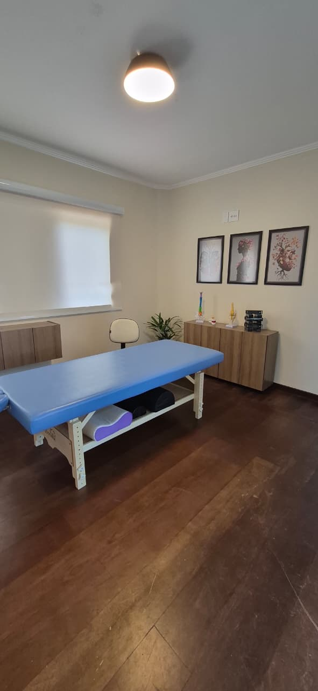
A dor que você já aprendeu a carregar
Você dá conta do trabalho, da casa e de todo mundo. Enquanto isso, o corpo vai avisando. Se algum destes sinais é seu, ele está pedindo mais do que um alívio passageiro.
Falar com o AdrianoAquele peso no fim do dia
Horas no computador ou no celular, e o pescoço trava. Virar a cabeça incomoda, e às vezes a tensão vira dor de cabeça.
A pontada nas costas
Uma dor perto da escápula que irradia para o ombro e piora quando você levanta o braço ou carrega peso.
Levantar já é um esforço
Acorda travada, sente a lombar ao se abaixar ou depois de muito tempo sentada ou em pé.
Dor que desce pela perna
Incômodo no glúteo, no quadril ou descendo pela perna, que atrapalha caminhar, dirigir e treinar.
Tensão que não desliga
Estresse, ansiedade e noites mal dormidas também ficam no corpo, em músculos que não relaxam nunca.
Melhora, mas volta
Massagem, remédio, alongamento… O alívio dura poucos dias. Esse é o sinal mais claro de que a causa não foi tratada.
Tratar só onde dói é enxugar o chão com a torneira aberta.
Muitas vezes a dor no ombro começa na postura do quadril, e a lombar sofre por causa de um músculo encurtado longe dali. Meu trabalho é encontrar a origem da dor. É isso que faz o resultado durar.
Tratamento comum
- Foca só no ponto que dói
- Protocolo igual para todo mundo
- Alívio de poucos dias
- Você sai sem entender o que tem
Corpus Vita
- Investiga a causa antes de tratar
- Plano pensado para o seu corpo
- Resultado que se sustenta
- Você entende a sua dor e sabe como evitá-la
Uma sessão pensada só para você
Nada de protocolo pronto. Cada atendimento dura cerca de 1h15 e segue quatro etapas.
Escuta
Você conta o que sente, desde quando sente e o que piora ou melhora. Sua rotina também diz muito sobre a sua dor.
Análise
Avalio postura, mobilidade e tensões para chegar à origem do problema, que muitas vezes está longe de onde dói.
Tratamento
Na maca, uso as técnicas manuais que o seu caso pede. É o resultado que define a técnica, não o contrário.
Orientação
Você sai sabendo o que foi feito, por que foi feito e o que fazer no dia a dia para o resultado durar.
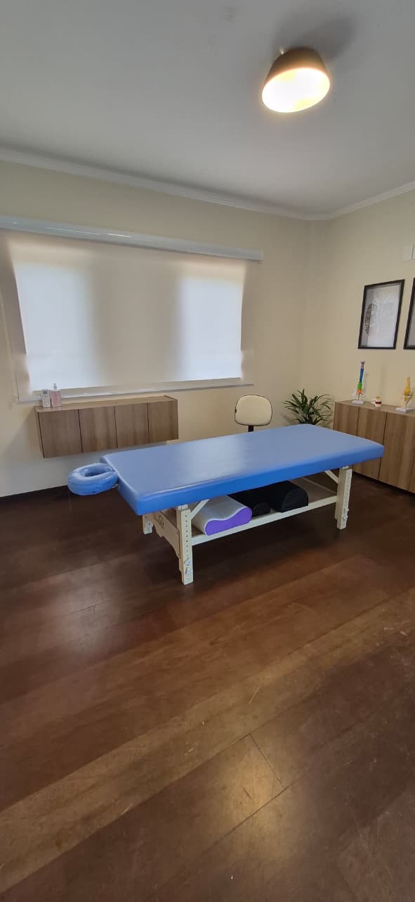
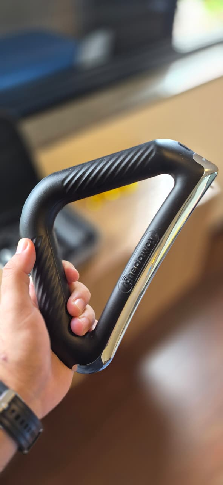
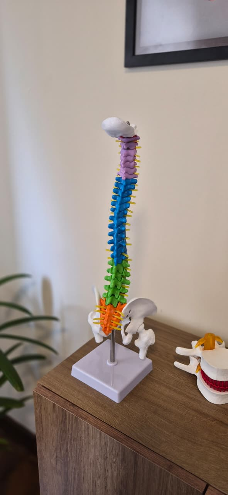
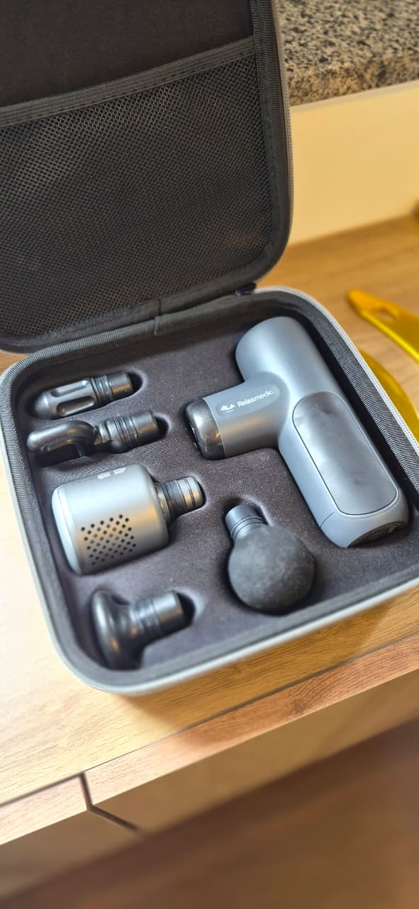
As técnicas são ferramentas. Você não precisa saber qual escolher: essa decisão é minha, e é para isso que existe a análise.
Quero uma avaliação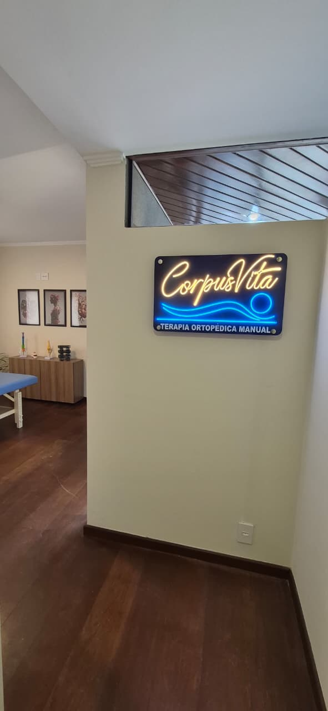
Prazer, eu sou o Adriano Luz
Sou terapeuta ortopédico manual e criei a Corpus Vita com uma convicção: ninguém deveria conviver com dor como se fosse normal.
A maioria das pessoas chega até mim depois de já ter tentado de tudo. Elas não precisam de mais uma massagem. Precisam de alguém que pare para entender de onde vem a dor.
Por isso cada sessão começa por uma análise clínica cuidadosa. É ela que me permite tratar a causa e entregar um resultado que dura. Atendo uma pessoa por vez, com atenção total, do começo ao fim.
Um lugar feito para você desacelerar
A Corpus Vita fica dentro de um estúdio de Pilates no Central Parque, em Sorocaba. Um ambiente calmo, iluminado e acolhedor, do momento em que você chega até a hora de ir embora.
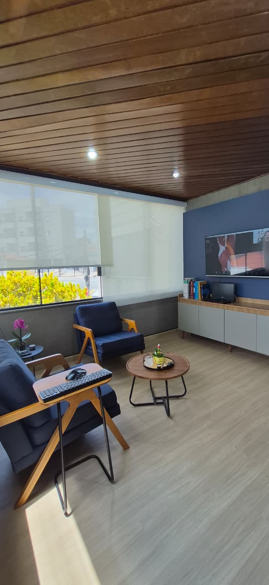
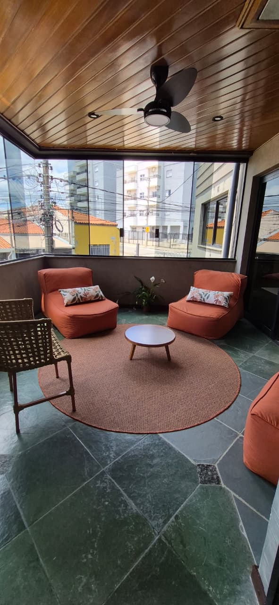
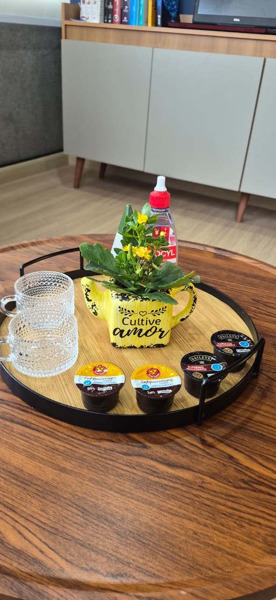
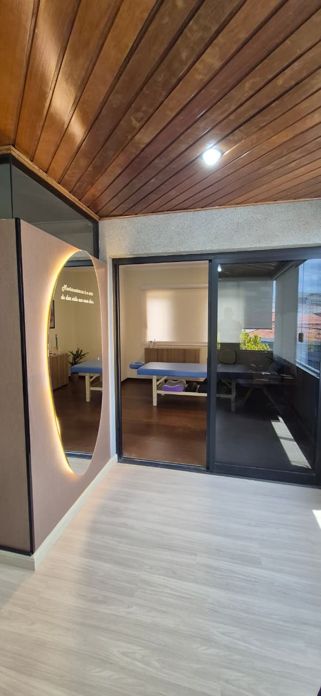
Chegou cedo? Tome um café antes.
O espaço tem um café com área interna e jardim ao ar livre. Dá para chegar com calma, comer alguma coisa depois da sessão ou simplesmente esticar o seu momento de cuidado.
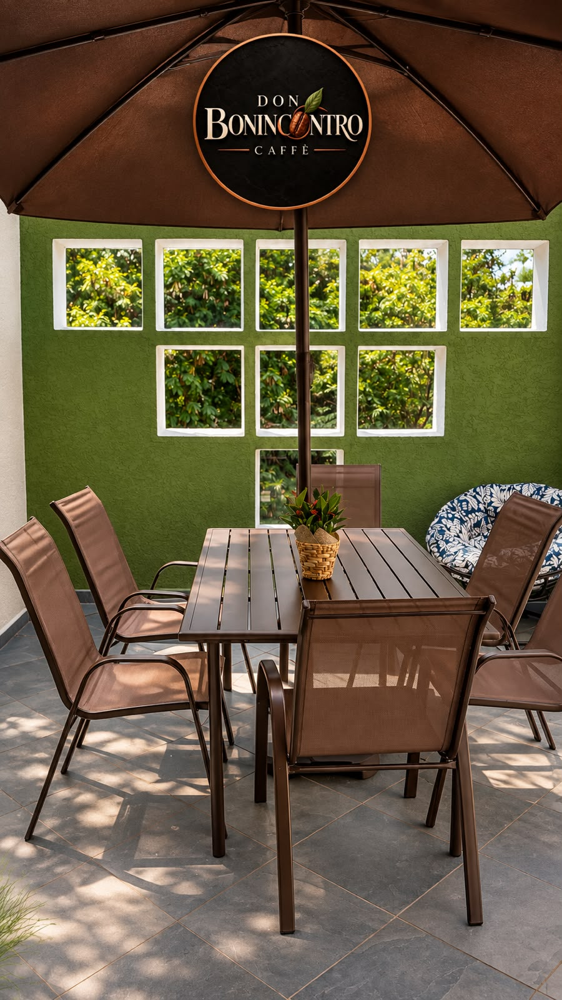
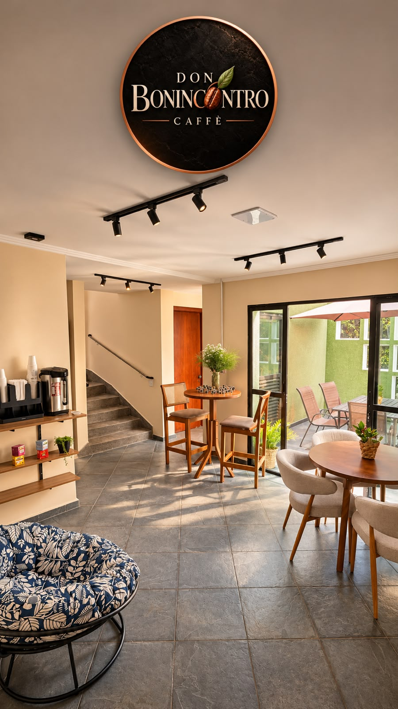
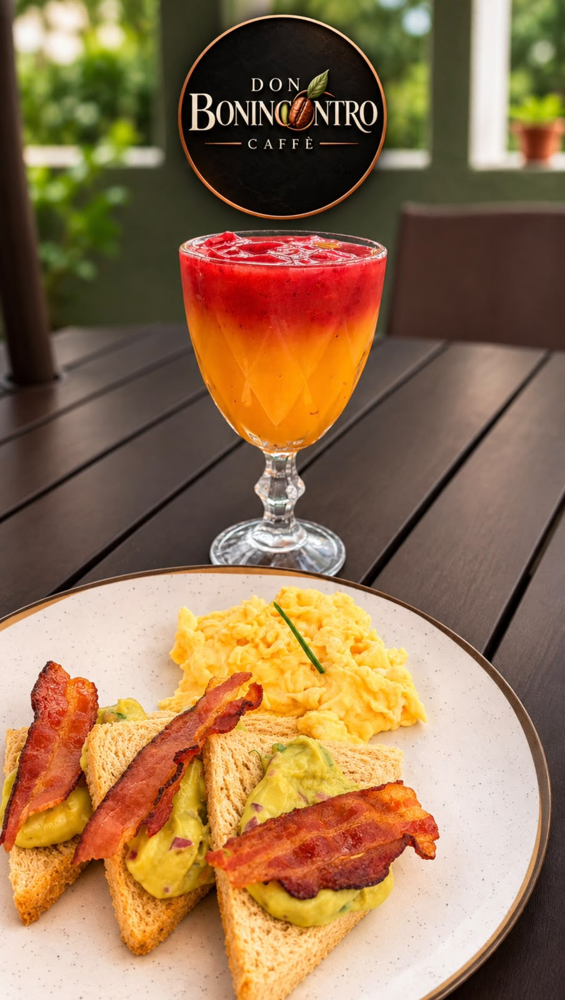
Um preço único, porque você paga pelo resultado
Em muitos lugares, cada técnica tem um preço e você precisa adivinhar qual contratar. Aqui o valor é o mesmo para qualquer sessão, porque o que eu entrego é o resultado, independente das técnicas que o seu caso pede.
E pense no custo de continuar com dor: noites mal dormidas, remédios, o treino deixado de lado. Tratar a causa é o caminho mais econômico a longo prazo.
- Escuta e análise clínica do seu caso
- Todas as técnicas necessárias, sem custo extra
- Orientações para o dia a dia
- Acompanhamento direto pelo WhatsApp
Atendimento individual, com poucos horários por dia.
O que dizem os nossos clientes
Excelente atuação do Adriano, entrei travado, cheio de dores e saí uma nova pessoa!! Além do trabalho na parte física, Adriano me deu diversas instruções, que tenho certeza que vão ajudar muito com a minha qualidade de vida!!
Profissional Adriano foi extremamente atencioso e dedicado às minhas queixas. Senti melhora significativa e imediata! Ambiente acolhedor! Recomendo!!!
5 estrelas porque o cara é bom demais. Eu tava todo torto, cheio de dor, ele com as técnicas dele me salvou e ainda explica tudo certinho. O cara é bom, pode confiar!
Antes de agendar, você deve estar se perguntando…
Como sei se o meu caso pode ser tratado aqui?
Se você sente dor, incômodo ou limitação nos movimentos do dia a dia, provavelmente sim. Me chame no WhatsApp e conte o que sente. Eu digo com sinceridade se posso ajudar. Se o seu caso precisar de outro profissional, eu também aviso.
Quantas sessões vou precisar?
Depende da origem e do tempo da sua dor. Muitas pessoas já sentem diferença na primeira sessão. Ao fim do primeiro atendimento, com a análise feita, eu digo com clareza o que esperar e qual caminho faz sentido para você.
A sessão dói?
Algumas técnicas podem causar um desconforto pontual em áreas muito tensas, mas sempre dentro do seu limite. Você está no controle o tempo todo, e eu ajusto a intensidade conforme o seu retorno.
Por que o valor é igual para qualquer sessão?
Porque você não está comprando uma técnica, e sim um resultado. Se o seu caso pede liberação, quiropraxia e mobilização na mesma sessão, você não paga a mais por isso. Assim eu escolho o que é melhor para você, não o que é mais caro.
Isso é massagem relaxante?
Não. O relaxamento acontece, mas o objetivo é terapêutico: tratar dores e disfunções a partir da causa. Por isso toda sessão começa por uma análise, e não direto na maca.
Preciso de pedido médico ou exames?
Não é obrigatório. Se você tiver exames de imagem ou laudos recentes, traga. Eles ajudam a completar a análise.
Que roupa devo usar?
Venha com uma roupa confortável que permita movimento, como a que você usaria para um treino leve.
Você não precisa se acostumar com a dor.
Conte o que você está sentindo. Eu respondo pessoalmente, normalmente em até 30 minutos, e a gente encontra o melhor horário para começar.
Quero agendar minha avaliaçãoAtendimento com hora marcada · Central Parque, Sorocaba